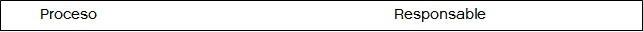

Manual de Seguridad de la Información
Analiza los tipos de activos de información y la gestión sobre ellos, al considerar la información surgida de las bases de datos y sistemas informáticos de la administración pública.
1. INTRODUCCIÓN
Las presentes pautas de Seguridad de la Información se dictan en cumplimiento de las disposiciones legales vigentes, con el objeto de gestionar adecuadamente la seguridad de la información y el ambiente tecnológico de un organismo y de proporcionar el apoyo de la alta dirección de la misma para el cumplimiento de sus objetivos. Asimismo, debe ser conocida y cumplida por toda la planta de personal del organismo sea cual fuere su nivel jerárquico y su situación de revista. La información, los procesos, los sistemas y las redes de apoyo, como así también, los recursos humanos son activos muy importantes para un organismo. Definir, lograr, sostener y mejorar la seguridad de la información debe ser esencial para mantener una eficacia y eficiencia en la operación de las actividades, el cumplimiento normativo y la reputación del organismo. Las organizaciones, con sus redes de datos y sus sistemas de información —uno de sus activos más importantes—, enfrentan amenazas a su confidencialidad, integridad y disponibilidad, provenientes de un amplio rango de fuentes, incluyendo fraude por computadora, espionaje, sabotaje, vandalismo, fuego o inundación. Las causas de daño como código malicioso, robo y/o fuga de información, ataques de denegación de servicio, son cada vez más frecuentes, ambiciosas y más sofisticadas. La seguridad de la información funcionará como un facilitador a los efectos de mitigar los riesgos relevantes. La interconexión de redes públicas y privadas y el intercambio de fuentes de información incrementan la dificultad de lograr un adecuado control de la información a la que cada usuario puede acceder, de acuerdo a la necesidad que su perfil de usuario le requiere.
2. TIPOS DE ACTIVOS DE INFORMACIÓN
Los activos por proteger, mediante el cumplimiento de la Política de Seguridad de la Información, son:
- La información propiamente dicha, en sus múltiples formatos (papel, digital, imagen, audio, video).
- Equipos/Sistemas/Infraestructura que soportan los diferentes formatos de información.
- Las personas que utilizan la información, y que tienen el conocimiento de los procesos del organismo.
Se debe proteger la información de un rango amplio de amenazas para poder asegurar la continuidad de las operaciones, a fin de minimizar el riesgo de que el organismo no pueda continuar con sus actividades. A los efectos de lo indicado anteriormente, se debe implementar un conjunto de controles, incluyendo políticas, procesos, procedimientos, estructura organizacional y funciones de software y hardware. Es necesario monitorear, revisar y mejorar estos controles cuando sea necesario para asegurar que se cumplan los objetivos de seguridad, en línea con todos los procesos de gestión del organismo.
2.1 GESTIÓN DE RIESGOS SOBRE LOS ACTIVOS DE INFORMACIÓN
Los requerimientos de seguridad se identifican mediante una evaluación metódica de los riesgos de seguridad a la que están expuestos los activos de información del organismo, arriba mencionados. A tal efecto resulta imprescindible realizar una clasificación de los activos de información y de la información propiamente dicha que produce el organismo. Se deben identificar claramente todos los activos de información, elaborando y manteniendo un inventario de ellos. El Comité de Seguridad de la Información (punto 4.1.1) deberá decidir el tratamiento que se llevará a cabo frente a los riesgos y documentar adecuadamente dichas decisiones. Las posibles opciones para el tratamiento de los riesgos son:
a) Mitigar los riesgos mediante la aplicación de controles apropiados para reducir los efectos de aquellos.
b) Aceptar los riesgos de manera objetiva y consciente, siempre y cuando estos satisfagan claramente la política y los criterios de aceptación de riesgos del organismo.
c) Evitar los riesgos eliminando las acciones que los originan.
d) Transferir los riesgos asociados a otras partes interesadas, por ejemplo: compañías de seguro o proveedores.
La política de seguridad de la información debe propender a minimizar los riesgos de la gestión de la información preservando las siguientes características:
- Confidencialidad: se garantiza que la información sea accesible solo a aquellas personas autorizadas a tener acceso a ella.
- Integridad: se salvaguarda la exactitud y la totalidad de la información y los métodos de procesamiento.
- Disponibilidad: se garantiza que los usuarios autorizados tengan acceso a la información y a los recursos relacionados con ella, toda vez que lo requieran.
3. DEFINICIONES
A los efectos de una correcta interpretación de la presente Política, se deben tener en cuenta las siguientes definiciones:
Información: Se refiere a toda comunicación o representación de conocimiento como datos, en cualquier forma, con inclusión de formas textuales, numéricas, gráficas, cartográficas, narrativas o audiovisuales, y en cualquier medio, ya sea magnético, en papel, en pantallas de computadoras, audiovisual u otro.
Sistema de información: Se refiere a un conjunto independiente de recursos de información organizados para la recopilación, procesamiento, mantenimiento, transmisión y difusión de información según determinados procedimientos, tanto automatizados como manuales.
Tecnología de la información: Se refiere al hardware y software operados por un organismo o por un tercero que procese información en su nombre, para llevar a cabo una función propia del organismo, sin tener en cuenta la tecnología utilizada, ya se trate de computación de datos, telecomunicaciones u otro tipo.
Tratamiento de riesgos: Proceso de selección e implementación de medidas para modificar el riesgo.
Gestión de riesgos: Actividades coordinadas destinadas a gestionar riesgos. Usualmente incluye la evaluación, el tratamiento, la aceptación y la comunicación de estos.
Amenaza: Una causa potencial de un incidente no deseado que puede ocasionar daños a un sistema u organismo.
Vulnerabilidad: Una debilidad de un activo o grupo de activos que puede ser aprovechada por una amenaza.
Control: Medio para gestionar el riesgo, incluyendo políticas y procedimientos.
Autenticidad: Asegurar la validez de la información en tiempo, forma y distribución. Asimismo, garantizar el origen de la información, validando el emisor para evitar suplantación de identidades.
Auditabilidad: Todos los eventos de un sistema deben poder ser registrados para su control posterior.
Protección a la duplicación: Asegurar que una transacción solo se realice una vez, a menos que se especifique lo contrario. Impedir que se grabe una transacción para luego reproducirla con el objeto de simular múltiples peticiones del mismo remitente original.
No repudio: Toma de medidas para evitar que un organismo que haya enviado o recibido información alegue ante terceros que no la envió o recibió.
Legalidad: Cumplimiento de las leyes, normas, reglamentaciones o disposiciones a las que está sujeto al organismo.
Confiabilidad de la información: La información generada debe ser adecuada para sustentar la toma de decisiones y la ejecución de las misiones y funciones.
4. DE LAS RESPONSABILIDADES
4.1 BÁSICAS
La implementación de la presente política dentro de la estructura del organismo requiere del trabajo conjunto del Responsable de Seguridad Informática, de los Propietarios de la Información y del Responsable de Tecnología de la Información, quienes llevarán a cabo las siguientes funciones:
- Revisar y proponer a la máxima autoridad del organismo para su aprobación la Política de Seguridad de la Información y las funciones generales en materia de seguridad de la información.
- Monitorear cambios significativos en los riesgos que afectan a los recursos de información frente a las amenazas más importantes.
- Tomar conocimiento y supervisar la investigación y monitoreo de los incidentes relativos a la seguridad.
- Aprobar las principales iniciativas para incrementar la seguridad de la información, de acuerdo con las competencias y responsabilidades asignadas a cada área, así como acordar y aprobar metodologías y procesos específicos relativos a seguridad de la información.
- Garantizar que la seguridad de la información sea parte del proceso de planificación de la información; evaluar y coordinar la implementación de controles específicos de seguridad de la información para nuevos sistemas o servicios.
- Promover la difusión y el apoyo a la seguridad de la información dentro del organismo y coordinar el proceso de administración de la continuidad de las actividades del organismo.
4.1.1 COMITÉ DE SEGURIDAD DE INFORMACIÓN
Según las características del organismo, se podrá conformar un Comité de Seguridad de Información integrado por representantes de las distintas áreas del organismo, destinado a garantizar las iniciativas de seguridad.
4.2 COMPLEMENTARIAS
4.2.1 LOS PROPIETARIOS DE LA INFORMACIÓN Y PROPIETARIOS DE ACTIVOS
Son funcionarios a los que se les ha asignado la responsabilidad de la gestión y utilización de una información en particular. Los propietarios serán los funcionarios a cargo de las diferentes unidades organizacionales y sus principales responsabilidades serán:
- Clasificar la información de acuerdo con el grado de sensibilidad y criticidad de esta.
- Documentar y mantener actualizada la clasificación arriba mencionada.
- Definir qué usuarios deben tener permisos de acceso a la información de acuerdo con sus funciones y su competencia.
4.2.2 CUSTODIO
Tiene la posesión de la información y administra técnicamente los sistemas que utilizan esta información. Esta responsabilidad deberá ser asignada al responsable de Tecnología de la Información (en adelante TI) .Sus funciones son:
- Salvaguardar el almacenamiento y procesamiento seguro de la información, como puede ser el resguardo diario de la información y la administración de los sistemas de control de accesos.
- Cumplir las instrucciones del propietario y los requisitos de la Política General de Seguridad Informática.
- Gestionar diariamente la información que le ha sido encomendada, incluyendo el soporte técnico.
- Informar periódicamente al propietario sobre todos los accesos a la información en cuestión.
- Proveer asesoramiento técnico sobre las mejores formas de proteger la confidencialidad, integridad y disponibilidad de la información.
- Informar de forma inmediata al Propietario de cualquier incidente o sospecha de violación de acceso a la información.
4.2.3 EL RESPONSABLE DE TECNOLOGÍA DE LA INFORMACIÓN
Cumplirá la función de cubrir los requerimientos de seguridad informática establecidos para la operación, administración y comunicación de los sistemas y recursos de tecnología del organismo Asimismo, tendrá la función de efectuar las tareas de desarrollo y mantenimiento de sistemas, siguiendo una metodología de ciclo de vida de sistemas apropiada, y que contemple la inclusión de medidas de seguridad en los sistemas en todas las fases.
4.2.4 EL RESPONSABLE DEL ÁREA LEGAL
Verificará el cumplimiento de la presente Política en la gestión de todos los contratos, acuerdos u otra documentación del organismo con sus empleados y con terceros. Asimismo, asesorará en materia legal al organismo, en lo que se refiere a la seguridad de la información.
4.2.5 ACTIVIDAD DE AUDITORÍA INTERNA
Deberá practicar auditorías periódicas sobre los sistemas y actividades vinculadas con la tecnología de información, debiendo informar sobre el cumplimiento de las especificaciones y medidas de seguridad de la información establecidas por esta Política y por las normas, procedimientos y prácticas que de ella surjan.
5. ORGANIZACIÓN INTERNA
Una vez aprobado el Manual de seguridad de la información por la máxima autoridad del organismo, esta debe asignar los roles de seguridad y coordinar y revisar la implementación de los procesos de seguridad definidos. A continuación se detallan los procesos de seguridad, indicándose en cada caso el/los responsable/s del cumplimiento de los aspectos de esta Política aplicables a cada caso:

Seguridad del Personal
Seguridad Física y Ambiental
Seguridad en las Comunicaciones y Operaciones
Control de Accesos
Seguridad en el Desarrollo y Mantenimiento de Sistemas
Planificación de la Continuidad Operativa
De igual forma, deberán designarse los propietarios de la información, quienes serán los de las distintas áreas que conforman el organismo.
Los recursos de procesamiento de información serán autorizados por los Propietarios de la Información, considerando su propósito y uso, conjuntamente con el Responsable de Seguridad de la Información, a fin de garantizar que se cumplan todas las políticas y requerimientos de seguridad pertinentes. Cabe aclarar que, si bien los propietarios pueden delegar la administración de sus funciones, detalladas en el punto 4.2.1, al personal idóneo a su cargo, conservarán la responsabilidad del cumplimiento de estas. La delegación de la administración por parte de los propietarios de la información será documentada por ellos y proporcionada al Responsable de Seguridad de la Información. A los efectos de procesar cualquier información sensible y crítica para el organismo, se deberá cumplir con los niveles de aprobación correspondientes, asegurando el cumplimiento de la presente política y las normas vigentes sobre el particular emitidas por el Órgano Rector en temas de tecnología de la información. El uso de recursos personales de procesamiento de información (pen drives, CD, etc.) en el lugar de trabajo puede ocasionar nuevas vulnerabilidades. En consecuencia, su uso será evaluado en cada caso por el responsable de TI y debe ser autorizado por el responsable del área requirente.
6. EXTERNOS AL ORGANISMO
6.1 IDENTIFICACIÓN DE LOS RIESGOS RELACIONADOS
El área legal deberá incluir en los contratos con proveedores de servicios de tecnología y cualquier otro proveedor de bienes o servicios cuya actividad afecte directa o indirectamente a los activos de información, la obligatoriedad del cumplimiento de las pautas de Seguridad de la Información y de todas las normas, procedimientos y prácticas relacionadas.
6.2 ASIGNACIÓN DE LA SEGURIDAD EN ACUERDOS CON TERCERAS PARTES
Los contratos firmados con estas terceras partes que tengan acceso a la información del organismo y a los dispositivos que la soportan, y puedan eventualmente procesar y gestionar la información disponible y/o agregar productos o servicios tecnológicos, deberán cubrir todos los requerimientos de seguridad contemplados en la presente política y en la normativa vigente sobre el particular.
7. RESPONSABILIDAD POR LOS ACTIVOS
7.1 INVENTARIO DE LOS ACTIVOS DE INFORMACIÓN
Se deben identificar claramente todos los activos, elaborando y manteniendo un inventario de los mismos. Este inventario debe detallar: código de identificación, el tipo de activo, breve descripción, principales características técnicas, responsable del activo, administrador del activo. El tipo de activo podrá ser:
- Información
- Equipos / Sistemas / Infraestructura
- Recursos humanos
7.2 PROPIEDAD DE LOS ACTIVOS
Los Propietarios de los Activos son los encargados de clasificarlos de acuerdo con su grado de sensibilidad y criticidad, de documentar y mantener actualizada la clasificación efectuada, de definir las funciones que deben tener permisos de acceso a los activos y son responsables de mantener los controles adecuados para garantizar su seguridad. El Responsable de Seguridad de la Información es el encargado de asegurar que los lineamientos para la utilización de los recursos de la tecnología de información contemplen los requerimientos de seguridad establecidos según la criticidad de la información que procesan.
Cada Propietario de la Información supervisará que el proceso de clasificación y rótulo de información de su área de competencia sea cumplimentado de acuerdo con lo establecido en la presente Política.
7.3 USO ACEPTABLE DE LOS ACTIVOS
Se deben identificar, documentar e implementar reglas para el uso aceptable de la información y los activos asociados con las instalaciones de procesamiento de la información. El uso aceptable debe estar vinculado directamente con las características de los activos, de la información que producen y de la capacidad técnica de las instalaciones soporte para su procesamiento.
8. CLASIFICACIÓN DE LA INFORMACIÓN
8.1 DIRECTRICES PARA LA CLASIFICACIÓN
La información se debe clasificar de acuerdo con los criterios de: confidencialidad, integridad y disponibilidad.
8.1.1 POR SU NIVEL DE CONFIDENCIALIDAD LA INFORMACIÓN PODRÁ CLASIFICARSE EN:
» Pública: Información que puede ser conocida y utilizada sin autorización por cualquier persona.
» De uso interno: Información que puede ser conocida y utilizada por cualquier agente del organismo o parte externa y cuya utilización pudiere ocasionar pérdidas leves para el organismo.
» Confidencial: Información que solo puede ser conocida por un grupo de agentes del organismo, siendo esta necesaria para sus funciones, y cuya divulgación o uso no autorizados podría ocasionar perjuicios de mediano/alto impacto para el organismo.
» Secreta: Información que solo puede ser conocida por un grupo muy reducido de agentes del organismo, y cuyo uso indebido podría ocasionar perjuicios graves de muy alto impacto o estratégico para el organismo.
8.1.2 POR SU NIVEL DE INTEGRIDAD, QUE PREVIENE LA DEGRADACIÓN DE LA INFORMACIÓN.
» Reemplazable: Aquella cuya modificación no altera la operatoria del organismo ni afecta a la imagen pública del organismo ni del Gobierno de la Ciudad Autónoma de Buenos Aires (en adelante GCBA).
» Baja: Aquella que es posible recuperar o restaurar con relativa facilidad. Su modificación no autorizada podría ocasionar pérdidas menores, impactando a nivel operativo o afectando de forma menor la imagen pública del organismo y del GCBA.
» Alta: Aquella cuya obtención o restitución es compleja. Su modificación no autorizada podría ocasionar pérdidas significativas, impacto a nivel directivo o afectar la imagen pública del organismo y del GCBA.
» Crucial: Información irremplazable. Su modificación no autorizada podría ocasionar pérdidas graves, impacto a nivel estratégico o afectar gravemente la imagen pública del GCBA.
8.1.3 POR SU NIVEL DE DISPONIBILIDAD: LA DISPONIBILIDAD PREVIENE LA DENEGACIÓN NO AUTORIZADA DE LA INFORMACIÓN.
» Estándar: Es aquella cuyo no acceso no afecta la operatoria del organismo.
» Relevante: Es aquella cuyo no acceso permanente durante una semana o más podría ocasionar pérdidas no significativas o impacto a nivel operativo del organismo.
» Delicada: Es aquella cuyo no acceso permanente durante un día o más podría ocasionar pérdidas significativas o impacto considerable a nivel directivo del organismo.
» Vital: Es aquella cuyo no acceso permanente durante unas horas podría ocasionar pérdidas graves y/o impacto a nivel estratégico del organismo y del GCBA.
8.1.4 POR SU NIVEL DE CRITICIDAD
» Baja: Aquella cuyo acceso y/o adulteración o degradación no afecta la operatoria del organismo.
» Media: Aquella cuyo acceso indebido y/o adulteración o degradación podría afectar la operatoria del organismo.
» Alta: Aquella cuyo acceso indebido y/o adulteración o degradación podría afectar la operatoria dañando considerablemente su imagen.
9. ROTULADO y MANEJO DE LA INFORMACIÓN
Se deberán desarrollar e implementar un apropiado conjunto de procedimientos para rotular y manipular la información, en línea con el esquema de clasificación detallado en el punto anterior.
10. ROL DEL ÁREA DE RECURSOS HUMANOS
10.1 AL MOMENTO DE LA INCORPORACIÓN DE UN AGENTE
Deberá notificar a todo el personal que ingresa de sus obligaciones respecto del cumplimiento de las pautas de seguridad de la información y de todas las normas, procedimientos y prácticas que de ella surjan. Asimismo, tendrá a su cargo la notificación del presente manual a todo el personal de los cambios que en él se produzcan, la implementación de la suscripción de los Compromisos de Confidencialidad (entre otros) y las tareas de capacitación continua en materia de seguridad.
10.2 DURANTE EL EMPLEO
10.2.1. RESPONSABILIDADES DEL ÁREA DE RECURSOS HUMANOS
El área de Recursos Humanos solicitará a los empleados, contratistas y usuarios de terceras partes que apliquen la seguridad en concordancia con las políticas y procedimientos establecidos cumpliendo con lo siguiente:
√ Estar adecuadamente informados de sus roles y responsabilidades de seguridad de la información antes de que se les otorgue el acceso a información sensible o a los sistemas de información.
√ Estar provistos de guías para establecer las expectativas de seguridad de su rol dentro del organismo.
√ Tener la suficiente motivación para cumplir con las políticas de seguridad del organismo.
√ Cumplir con las condiciones y términos del empleo, los cuales incluyen las políticas de seguridad de la información del organismo y métodos adecuados de trabajo.
10.3 DESVINCULACIÓN O CAMBIO DE PUESTO
Al momento del cese de las actividades de un empleado en el organismo, deberá comunicar fehacientemente este hecho al Responsable de Seguridad de la Información y al responsable de TI, quien deberá bloquear todos los accesos de esa persona a la red y desafectar todos sus privilegios en caso de desvinculación. Si el agente sufriera un cambio de puesto dentro del organismo, se le deberán actualizar sus roles y permisos en función de la nueva asignación.
11. PROTECCIÓN FÍSICA Y AMBIENTAL
11.1 GENERALIDADES
La seguridad física y ambiental brinda el marco para minimizar los riesgos de daños, pérdidas e interferencias a la información y a las operaciones del organismo. Asimismo, pretende evitar al máximo el riesgo de accesos físicos no autorizados, mediante el establecimiento de perímetros de seguridad. El establecimiento de perímetros de seguridad y de áreas protegidas facilita la implementación de controles tendientes a proteger las instalaciones de procesamiento de información crítica o sensible del organismo y de accesos físicos no autorizados. El control de los factores ambientales permite garantizar el correcto funcionamiento de los equipos de procesamiento y minimizar las interrupciones de servicio. Deben contemplarse tanto los riesgos en las instalaciones del organismo así como en instalaciones próximas a la sede, que puedan interferir con las actividades. El equipamiento donde se almacena información es susceptible de mantenimiento periódico, lo cual implica en ocasiones su traslado y permanencia fuera de las áreas protegidas del organismo. Dichos procesos deben ser ejecutados bajo estrictas normas de seguridad y de preservación de la información almacenada en los mismos. También se tendrá en cuenta la aplicación de dichas normas en equipamiento perteneciente al organismo pero situado físicamente fuera de este (housing) así como en equipamiento ajeno que albergue sistemas y/o preste servicios de procesamiento de información al organismo (hosting). La información almacenada en los sistemas de procesamiento y la documentación contenida en diferentes medios de almacenamiento son susceptibles de ser recuperadas mientras no están siendo utilizadas. Es por ello que el transporte y la disposición final presentan riesgos que deben ser evaluados. Gran cantidad de información manejada en las oficinas se encuentra almacenada en papel, por lo que es necesario establecer pautas de seguridad para la conservación de dicha documentación; y para su destrucción cuando así lo amerite.
11.2 RESPONSABILIDADES
El Responsable de Seguridad de la Información definirá junto con el responsable de TI y los Propietarios de Información, según corresponda, las medidas de seguridad física y ambiental para el resguardo de los activos críticos, en función de un análisis de riesgos, y controlará su implementación. Asimismo, verificará el cumplimiento de las disposiciones sobre seguridad física y ambiental indicadas en el presente y controlará el mantenimiento del equipamiento informático de acuerdo con las indicaciones de proveedores, tanto dentro como fuera del organismo.
11.3 PERÍMETRO DE SEGURIDAD FÍSICA
La protección física deberá llevarse a cabo mediante la creación de diversas barreras o medidas de control físicas en las instalaciones de procesamiento de información. El organismo utilizará perímetros de seguridad para proteger las áreas que contienen instalaciones de procesamiento de información. Un perímetro de seguridad está delimitado por una barrera, por ejemplo una pared, una puerta de acceso controlado por dispositivo de autenticación, o un escritorio u oficina de recepción atendidos por personas. El emplazamiento y la fortaleza de cada barrera estarán definidos por el Responsable de Seguridad de la Información, de acuerdo con la evaluación de riesgos efectuada.
11.4 CONTROLES DE ACCESO FÍSICO
Para garantizar un mayor control podrá aplicarse el concepto de “Área restringida”, que comprende el ámbito donde estén instalados los servidores del nodo o red local. El Responsable de Seguridad de la Información implementará controles de acceso físico a fin de permitir el ingreso solo al personal expresamente autorizado. Las dependencias de acceso restringido deben ser controladas las 24 horas por un sistema de control de accesos: cerradura de llave, tarjetas de banda magnética, teclados numéricos, etc. Todos los sistemas de protección de puertas deberán controlar solamente el acceso al área, la salida deberá ser libre, y dichas puertas deberán poseer un sistema antipánico para poder abandonar la dependencia en caso de emergencia.
11.5 PROTECCIÓN DE INSTALACIONES
Para la selección y el diseño de un área protegida, se tendrá en cuenta la posibilidad de daño producido por incendio, inundación, explosión, agitación civil, y otras formas de desastres naturales o provocados por el hombre. También se tomarán en cuenta las disposiciones y normas (estándares) en materia de sanidad y seguridad. Asimismo, se considerarán las amenazas a la seguridad que representan los edificios y las zonas aledañas, por ejemplo, filtración de agua desde otras instalaciones.
11.6 SEGURIDAD DEL EQUIPAMIENTO
El equipamiento deberá ser ubicado y protegido de tal manera que se reduzcan los riesgos ocasionados por amenazas y peligros ambientales, y las oportunidades de acceso no autorizado. Deberá protegerse el equipamiento de las posibles fallas de suministro de energía u otras anomalías eléctricas. Se deberá prevenir cualquier interrupción total o parcial del suministro de energía y se deberá contar con el respaldo técnico necesario. Los conductores eléctricos deben estar bajo conductos aislantes (Normas IRAM) con descarga a tierra. Debe instalarse un sistema de luces de emergencia con autonomía no menor a 2 (dos) horas. El Responsable de Seguridad de la Información deberá atender las necesidades de mantenimiento de los equipos para asegurar su disponibilidad e integridad permanente. Deberá adoptar controles adecuados para minimizar el riesgo de amenazas potenciales por robo, hurto, incendio, explosivos, humo, inundaciones o filtraciones de agua, polvo, radiaciones electromagnéticas, etcétera. Deberá existir un control preciso del inventario físico de los equipos y recursos, su estado y distribución, sus rotaciones e inmovilización por desuso. Asimismo, se debe contar con un eficiente servicio técnico preventivo y correctivo sobre los equipos. Por su parte, los monitores de PC o terminales no deben estar expuestos en forma directa a la luz solar. En relación con la prevención y la extinción de incendios, el recinto donde opera el Centro de Procesamiento de Datos deberá ser resistente al fuego, por ejemplo: paredes ignífugas, lo mismo que los techos y el falso piso (en caso de existir). Debe haber un sistema automático de detección y extinción de incendios teniendo en cuenta que los elementos que se utilicen no sean perjudiciales para la salud del personal del área.
11.7 SEGURIDAD DE LOS EQUIPOS FUERA DE LAS INSTALACIONES
El uso de equipamiento destinado al procesamiento de información fuera del ámbito del organismo será autorizado por el Responsable de Seguridad de la Información. En el caso de que en dicho equipamiento se almacene información clasificada, debe ser aprobado además por su Propietario. La seguridad provista debe ser equivalente a la suministrada dentro del ámbito del organismo para un propósito similar, teniendo en cuenta los riesgos de trabajar fuera de la misma. Se respetarán permanentemente las instrucciones del fabricante respecto del cuidado del equipamiento. Asimismo, se mantendrá una adecuada cobertura de seguro para proteger el equipamiento fuera del ámbito del organismo.
11.8 POLÍTICAS DE ESCRITORIOS y PANTALLAS LIMPIOS
Se adoptará una política de escritorios limpios para proteger documentos en papel y dispositivos de almacenamiento removibles y una política de pantallas limpias en las instalaciones de procesamiento de información, a fin de reducir los riesgos de acceso no autorizado, pérdida y daño de la información, tanto durante el horario normal de trabajo como fuera de este. Se aplicarán los siguientes lineamientos:
- Se deberán almacenar bajo llave los documentos en papel y los medios informáticos cuando no están siendo utilizados, especialmente fuera del horario de trabajo.
- Se deberá guardar bajo llave la información sensible o crítica del organismo cuando no está en uso, especialmente cuando no hay personal en la oficina.
- Se deberán proteger los puntos de recepción y envío de correo postal y las máquinas de fax no atendidas.
- Se deberán bloquear las fotocopiadoras (o protegerlas de alguna manera del uso no autorizado) fuera del horario normal de trabajo.
- Se deberá retirar inmediatamente la información sensible o confidencial, una vez impresa.
12. GESTIÓN DE COMUNICACIONES y OPERACIONES
12.1 GENERALIDADES
Los sistemas de información están comunicados entre sí, tanto dentro del organismo como con terceros fuera de él. Por lo tanto, es necesario establecer criterios de seguridad en las comunicaciones que se establezcan. Las comunicaciones establecidas permiten el intercambio de información, que debe estar regulado para garantizar las condiciones de confidencialidad, integridad y disponibilidad de la información que se emite o recibe por los distintos canales.
12.2 RESPONSABILIDADES
El Responsable de Seguridad de la Información tendrá a su cargo las siguientes tareas:
- Definir procedimientos para el control de cambios a los procesos operativos documentados, los sistemas e instalaciones de procesamiento de información, y verificar su cumplimiento, de manera que no afecten la seguridad de la información.
- Establecer criterios de aprobación para nuevos sistemas de información, actualizaciones y nuevas versiones, contemplando la realización de las pruebas necesarias antes de su aprobación definitiva. Verificar que dichos procedimientos de aprobación de software incluyan aspectos de seguridad para todas las aplicaciones.
- Definir procedimientos para el manejo de incidentes de seguridad y para la administración de los medios de almacenamiento.
- Definir y documentar una norma clara con respecto al uso del correo electrónico.
- Definir y documentar controles para la detección y prevención del acceso no autorizado, la protección contra software malicioso y para garantizar la seguridad de los datos y los servicios conectados en las redes del organismo.
- Desarrollar procedimientos adecuados de concientización de usuarios en materia de seguridad, controles de acceso al sistema y administración de cambios.
- Verificar el cumplimiento de las normas, procedimientos y controles establecidos.
- Administrar los medios técnicos necesarios para permitir la segregación de los ambientes de procesamiento.
- Monitorear las necesidades de capacidad de los sistemas en operación y proyectar las futuras demandas de capacidad, a fin de evitar potenciales amenazas a la seguridad del sistema o a los servicios del usuario.
- Controlar la realización de las copias de resguardo de información, así como la prueba periódica de su restauración.
- Desarrollar y verificar el cumplimiento de procedimientos para comunicar las fallas en el procesamiento de la información o los sistemas de comunicaciones, que permita tomar medidas correctivas.
El Responsable de Seguridad de la Información junto con el responsable del área legal evaluará los contratos y acuerdos con terceros para garantizar la incorporación de consideraciones relativas a la seguridad de la información involucrada en la gestión de los productos o servicios prestados. Cada Propietario de la Información, junto con el Responsable de Seguridad de la Información, determinará los requerimientos para resguardar la información por la cual es responsable. Asimismo, aprobará los servicios de mensajería autorizados para transportar la información cuando sea requerido, de acuerdo a su nivel de criticidad.
12.3 GESTIÓN DE PROVISIÓN DE SERVICIOS
Se deberá implementar y mantener el nivel apropiado de seguridad de la información y la entrega del servicio en línea con los acuerdos de entrega de servicios de terceros. El organismo debe verificar la implementación de los acuerdos, monitorear su cumplimiento con los estándares y manejar los cambios para asegurar que los servicios sean entregados para satisfacer todos los requerimientos acordados con la tercera persona. Se verificará, además, que los servicios brindados por una tercera parte incluyan los acuerdos de seguridad arreglados, definiciones de servicio, y aspectos de la gestión del servicio. En el caso de acuerdos de tercerización, el organismo debe planificar las transiciones necesarias (de la información, de las instalaciones de procesamiento de información, y cualquier otro componente que necesite ser trasladado), y que asegure que la seguridad sea mantenida a lo largo del período de transición.
12.4 PROTECCIÓN CONTRA CÓDIGO MALICIOSO
El software malicioso es un código desarrollado que se instala de forma no autorizada e interfiere con el normal funcionamiento de los equipos de procesamiento, almacenamiento o incluso la red de comunicaciones. Ante la amenaza continua de la existencia de código malicioso y su nivel de sofisticación para expandirse, es necesario establecer una serie de medidas que velen por la seguridad, disponibilidad e integridad de la información de los usuarios y sistemas. La forma más común en que se transmite el código malicioso es por transferencia de archivos, descarga o ejecución de archivos adjuntos de correos, visitando páginas web o leyendo un correo electrónico. Por ello, se deben tomar las medidas necesarias a fin de poder detectar y eliminar el software malicioso de los equipos de procesamiento centralizado y las estaciones de trabajo conectadas a la red de comunicaciones mediante la utilización de una herramienta antivirus.
El Responsable de Seguridad de la Información definirá e implementará los controles de detección y eliminación de software malicioso (virus informáticos, troyanos, gusanos, malware en general; incluyendo código móvil), minimizando el riesgo de infección y propagación, e impidiendo los accesos no autorizados, robo o destrucción de información. Estos controles involucrarán:
- Verificar que no se esté utilizando software no autorizado.
- Verificar la instalación y actualización periódica del software antivirus.
- Verificar el mantenimiento de los sistemas con las últimas actualizaciones de seguridad disponibles. Dicha situación debe estar reflejada en los contratos con el proveedor.
12.5 PROCEDIMIENTOS DE RESGUARDO DE LA INFORMACIÓN
El Responsable de Seguridad de la Información junto a los Propietarios de Información determinará los requerimientos para resguardar cada software o dato en función de su criticidad. Sobre la base de ello, se definirá y se documentará un esquema de resguardo de la información. El responsable de TI dispondrá y controlará la realización de dichas copias, así como la prueba periódica de su restauración e integridad. Para esto se debe contar con instalaciones de resguardo que garanticen la disponibilidad de toda la información y del software crítico del organismo Los sistemas de resguardo deben probarse periódicamente, asegurándose que cumplen con los requerimientos de los planes de continuidad de las actividades del organismo. A continuación se detallarán procedimientos para el resguardo de la información, que deben considerar los siguientes puntos:
- Definir un esquema de rótulo de las copias de resguardo que permita contar con toda la información necesaria para identificar cada una de ellas y administrarlas debidamente.
- Establecer un esquema de reemplazo de los medios de almacenamiento de las copias de resguardo, una vez concluida la posibilidad de ser reutilizados, de acuerdo con lo indicado por el proveedor, y asegurando la destrucción de los medios desechados.
- Almacenar en una ubicación remota copias recientes de información de resguardo junto con registros exactos y completos de estas, y los procedimientos documentados de restauración, a una distancia suficiente como para evitar daños provenientes de un desastre en el sitio principal. Se deben retener al menos tres generaciones o ciclos de información de resguardo para la información y el software esenciales para el organismo.
- Probar periódicamente los medios de resguardo.
- Verificar y probar periódicamente los procedimientos de restauración garantizando su eficacia y cumplimiento dentro del tiempo asignado a la recuperación en los procedimientos operativos.
Las prácticas y procedimientos se evaluarán con la participación de la Unidad de Auditoria Interna.
12.6 USO DEL CORREO ELECTRÓNICO
El responsable de TI deberá garantizar la provisión de una casilla de correo electrónico a cada agente del organismo. La casilla de correo otorgada al usuario es propiedad del organismo, independientemente del nombre y clave de acceso que sean necesarios para su utilización, por lo que su utilización debe relacionarse con fines laborales, vinculados a las actividades del organismo.
Los nombres de las casillas de correo electrónico los otorgará el responsable de TI. Entre las actividades prohibidas se encuentran:
- Leer, interceptar o revelar comunicaciones electrónicas pertenecientes a otro usuario sin su autorización previa y expresa.
- Divulgar las claves o contraseñas de acceso personales.
Con el objeto de minimizar el riesgo de violación a la seguridad a través del uso incorrecto del servicio de correo electrónico, se recomienda:
- Analizar los archivos adjuntos descargados con la herramienta antivirus instalada en las estaciones clientes.
- No adjuntar archivos mayores a 5 MB. Es conveniente utilizar herramientas de compresión, para minimizar el tamaño de los adjuntos.
Cada persona es responsable tanto del contenido del mensaje enviado como de cualquier otra información adjunta en él.
13. ADMINISTRACIÓN y CONTROL DE ACCESOS y PRIVILEGIOS
13.1 GENERALIDADES
El acceso por medio de un sistema de restricciones y excepciones a la información es la base de todo sistema de seguridad informática. Para impedir el acceso no autorizado a los sistemas de información, se deben implementar procedimientos formales para controlar la asignación de derechos de acceso a los sistemas de información, bases de datos y servicios de información, y estos deben estar claramente documentados, comunicados y controlados en cuanto a su cumplimiento. Los procedimientos comprenden todas las etapas del ciclo de vida de los accesos de los usuarios de todos los niveles, desde el registro inicial de nuevos usuarios hasta la privación final de derechos de los usuarios que ya no requieren el acceso. La cooperación de los usuarios es esencial para la eficacia de la seguridad, por lo tanto es necesario concientizarlos acerca de sus responsabilidades por el mantenimiento de controles de acceso eficaces, en particular aquellos relacionados con el uso de contraseñas y la seguridad del equipamiento.
13.2 RESPONSABILIDADES
El Responsable de la Seguridad de la Información será quien administre los niveles de acceso definidos por el máximo responsable del organismo junto con los propietarios de la Información. A su vez, deberá crear, implementar y verificar el cumplimiento de las pautas relacionadas con el control de accesos, registración de usuarios, administración de privilegios, otorgamiento de contraseñas, utilización de servicios de red, registro de eventos, protección de puertos, control de conexiones a la red, etcétera. El responsable del área de Recursos Humanos es el responsable de efectuar un control mensual de las modificaciones de puestos de trabajo y/o baja de personal, y/o modificación de equipos de trabajo, y notificar al responsable de TI para que efectúe las acciones correspondientes.
Los usuarios serán responsables de concluir las sesiones activas al finalizar las tareas, a menos que puedan protegerse mediante un mecanismo de bloqueo adecuado, como ser un protector de pantalla protegido por contraseña. Al terminar la jornada laboral o al dejar de utilizar la PC, los usuarios deberán apagarla con todos los periféricos asociados (ej.: impresoras, monitores, etc.). La Unidad de Auditoría Interna tendrá acceso a los registros de eventos a fin de colaborar en el control y efectuar recomendaciones sobre modificaciones a los aspectos de seguridad.
13.3 ADMINISTRACIÓN DE ACCESOS DE USUARIOS
Con el objetivo de impedir el acceso no autorizado a la información, se implementarán procedimientos formales para controlar la asignación de derechos de acceso a los sistemas, datos y servicios de información. Los procedimientos deberán abarcar todas las etapas en el ciclo de vida del acceso del usuario, desde el registro inicial de usuarios nuevos hasta la baja final de los usuarios que ya no requieren acceso a los sistemas y servicios de información. En la administración de accesos, deberán tomarse en cuenta los siguientes requisitos:
- Todos los usuarios deben disponer de un identificador único que permita asociar las actividades del sistema a un responsable individualizado.
- Los accesos deben seguir el principio de “menor privilegio”, permitiendo al usuario escalar el acceso a los recursos de información, en función de sus necesidades definidas en su puesto de trabajo.
- El registro de usuario se deberá mantener actualizado con identificación de derechos de acceso.
- Cada usuario deberá ser notificado por escrito u otro medio fehaciente de sus derechos de acceso, sus restricciones y privilegios.
- El derecho de acceso de los usuarios deberá ser revisado en intervalos no inferiores a tres meses, así como las autorizaciones de privilegios especiales de derechos de accesos.
- Se recomiendo utilizar el protector de pantalla con contraseña para las estaciones de trabajo con activación automática a partir de los 15 minutos de inactividad en el sistema.
13.4 RESPONSABILIDADES DEL USUARIO
Se deberá evitar el acceso de usuarios no autorizados, poner en peligro la información y el robo de información y los medios de procesamiento de la información. La cooperación de los usuarios autorizados es esencial para una seguridad efectiva. Los usuarios deben estar al tanto de sus responsabilidades para mantener controles de acceso efectivos, particularmente con relación al uso de claves secretas y la seguridad del equipo del usuario. Asimismo, se deberán seguir buenas prácticas de seguridad en la selección y uso de contraseñas. Las contraseñas constituyen un medio de validación y autenticación de la identidad de un usuario y, consecuentemente, un medio para establecer derechos de acceso a las instalaciones o servicios de procesamiento de información.
13.5 CONTROL DE ACCESO A LA RED
Se debe controlar el acceso a los servicios de redes internas y externas, evitando el acceso no autorizado. El acceso del usuario a las redes y servicios de estas no debe comprometer la seguridad.
13.6 CONTROL DE ACCESO A INTERNET
El acceso a Internet será utilizado con propósitos autorizados o con el destino por el cual fue provisto. El Responsable de Seguridad de la Información definirá procedimientos para solicitar y aprobar accesos a Internet. Los accesos serán autorizados formalmente por el Propietario de la Información del organismo a cargo del personal que lo solicite. Asimismo, se definirán las pautas de utilización de Internet para todos los usuarios.
13.7 CONTROL DE ACCESO AL SISTEMA OPERATIVO
Se deben utilizar medios de seguridad para restringir el acceso a los sistemas operativos a los usuarios no autorizados. Las contraseñas constituyen uno de los principales medios de validación de la autoridad de un usuario para acceder a un servicio informático. Los sistemas de administración de contraseñas deben constituir una herramienta eficaz e interactiva que garantice contraseñas de calidad. El sistema de administración de contraseñas debe:
- Imponer el uso de contraseñas individuales para determinar responsabilidades.
- Efectuarse al azar, y cuando el usuario se registre por primera vez, el sistema deberá forzar un cambio de contraseñas para mejorar la confiabilidad.
- Permitir que los usuarios seleccionen y cambien sus propias contraseñas (luego de cumplido el plazo mínimo de mantenimiento de estas) e incluir un procedimiento de confirmación para contemplar los errores de ingreso.
- Generar un vencimiento periódico, para que deba ser cambiada al menos con una frecuencia de tres meses.
- Evitar mostrar las contraseñas en pantalla cuando son ingresadas.
- Almacenar en forma separada los archivos de contraseñas y los datos de sistemas de aplicación.
- Almacenar las contraseñas en forma cifrada utilizando un algoritmo de cifrado unidireccional.
- Modificar todas las contraseñas predeterminadas por el vendedor una vez instalado el software y el hardware (por ejemplo, claves de impresoras, hubs, routers, etc.).
- Garantizar que el medio utilizado para acceder o utilizar el sistema de contraseñas asegure que no se tenga acceso a información temporal o en tránsito de forma no protegida.
- Denegar el acceso al sistema luego de tres intentos fallidos.
- Mantener un registro, como mínimo, de las últimas tres contraseñas utilizadas por el usuario y evitar la reutilización de estas.
13.8 MONITOREO DEL ACCESO y USO DE LOS SISTEMAS
Se deberá verificar la existencia de procedimientos para monitorear el uso de las instalaciones de procesamiento de la información, asegurando que se registren y se evalúen todos los eventos significativos para la seguridad de accesos. Se generarán, además, registros de auditoría que contengan excepciones y otros eventos relativos a la seguridad, incluyendo la siguiente información:
- Identificación del usuario.
- Fecha y hora de inicio y terminación.
- Identidad o ubicación de la terminal, si se hubiera dispuesto su identificación automática.
- Registros de intentos exitosos y fallidos de acceso al sistema.
- Registros de intentos exitosos y fallidos de acceso a datos y otros recursos.
En todos los casos, los registros de auditoría serán archivados preferentemente en un equipo diferente al que los genere y conforme los requerimientos de la Política de Retención de Registros. Los Propietarios de la Información junto con el Responsable de la Seguridad de la Información, deberán definir un cronograma de depuración de registros en línea en función de normas vigentes y de sus propias necesidades.
Se implementará un procedimiento de registro y revisión de los registros de auditoría, orientado a producir un informe de las amenazas detectadas contra los sistemas y los métodos utilizados. La periodicidad de dichas revisiones será definida por los Propietarios de la Información y el Responsable de Seguridad de la Información, de acuerdo con la evaluación de riesgos efectuada.
13.9 DISPOSITIVOS MÓVILES
Cuando se utilizan dispositivos informáticos móviles se debe tener especial cuidado en garantizar que no se comprometa la información ni la infraestructura del organismo. Se debe tener en cuenta, en este sentido, cualquier dispositivo móvil o removible, teléfonos celulares y sus tarjetas de memoria, dispositivos de almacenamiento removibles tales como CD o DVD, dispositivos de almacenamiento de conexión USB, tarjetas de identificación personal (control de acceso), dispositivos criptográficos, cámaras digitales, etc. La utilización de dispositivos móviles incrementa la probabilidad de ocurrencia de incidentes del tipo de pérdida, robo, hurto e ingreso de software malicioso. En consecuencia, debe entrenarse especialmente al personal que los utilice. Se desarrollarán normas y procedimientos sobre los cuidados especiales por observar ante la posesión de dispositivos móviles, que contemplarán las siguientes recomendaciones:
- Permanecer siempre cerca del dispositivo.
- No dejar desatendidos los equipos.
- No llamar la atención acerca de portar un equipo valioso.
- No poner identificaciones del organismo en el dispositivo, salvo los estrictamente necesarios.
- No poner datos de contacto técnico en el dispositivo.
- Mantener cifrada la información clasificada.
Asimismo, se confeccionarán procedimientos que permitan al propietario del dispositivo reportar rápidamente cualquier incidente sufrido y mitigar los riesgos a los que eventualmente estuvieran expuestos los sistemas de información del organismo, los que incluirán:
- Revocación de las credenciales afectadas.
- Notificación a grupos de trabajo donde potencialmente se pudieran haber comprometido recursos.
14. ADQUISICIÓN, DESARROLLO y MANTENIMIENTO DE SISTEMAS
14.1 GENERALIDADES
El desarrollo y mantenimiento de las aplicaciones es un punto crítico de la seguridad. Durante el análisis y diseño de los procesos que soportan estas aplicaciones se deben identificar, documentar y aprobar los requerimientos de seguridad e incorporarlos en las etapas de desarrollo e implementación. Adicionalmente, se deben diseñar controles de validación de datos de entrada, procesamiento interno y salida de datos. Dado que los analistas y programadores tienen el conocimiento total de la lógica de los procesos en los sistemas, se deben implementar controles que eviten maniobras dolosas por parte de estas personas u otras que puedan operar sobre los sistemas, bases de datos y plataformas de software de base (por ejemplo, operadores que puedan manipular los datos y/o atacantes que puedan comprometer/ alterar la integridad de las bases de datos), y en el caso de que se lleven a cabo, identificar rápidamente al responsable. Asimismo, es necesaria una adecuada administración de la infraestructura de base, sistemas operativos y software de base, en las distintas plataformas, para asegurar una correcta implementación de la seguridad, ya que en general los aplicativos se asientan sobre este tipo de software. Se debe asegurar la inclusión de controles de seguridad y validación de datos en la adquisición y el desarrollo de los sistemas de información. También se deben definir y documentar las normas y procedimientos que se aplicarán durante el ciclo de vida de los aplicativos y en la infraestructura de base en la cual se apoyan.
14.2 RESPONSABILIDADES
El Responsable de Seguridad de la Información junto con el Propietario de la Información y la Unidad de Auditoría Interna definirán los controles a ser implementados en los sistemas desarrollados internamente o por terceros, en función de una evaluación previa de riesgos. El Responsable de Seguridad de la Información junto con el Propietario de la Información definirán, en función de la criticidad de la información, los requerimientos de protección mediante métodos criptográficos. Luego, el Responsable de Seguridad de la Información definirá junto con el responsable de TI los métodos de encriptación por ser utilizados. El Responsable de Seguridad de la Información, además, cumplirá las siguientes funciones:
- Definir los procedimientos de administración de claves.
- Verificar el cumplimiento de los controles establecidos para el desarrollo y mantenimiento de sistemas.
- Garantizar el cumplimiento de los requerimientos de seguridad para el software.
- Definir procedimientos para el control de cambios a los sistemas, para la verificación de la seguridad de las plataformas y bases de datos que soportan e interactúan con los sistemas, para el control de código malicioso y para la definición de las funciones del personal involucrado en el proceso de entrada de datos.
El Responsable de Seguridad de la Información propondrá para su aprobación, por parte del superior jerárquico que corresponda, la asignación de funciones de “implementador” y “administrador de programas fuentes” al personal de su área que considere adecuado. Asimismo, verificará el cumplimiento de las definiciones establecidas sobre los controles y las medidas de seguridad a ser incorporadas a los sistemas. El responsable de TI propondrá quiénes realizarán la administración de las técnicas criptográficas y claves. El área legal incorporará aspectos relacionados con el licenciamiento, la calidad del software y la seguridad de la información en los contratos con terceros por el desarrollo de software.
15. GESTIÓN DE INCIDENTES DE SEGURIDAD DE LA INFORMACIÓN
15.1 GENERALIDADES
Existen numerosas amenazas que atentan contra la seguridad de la información, representando riesgos latentes que, de materializarse, pueden ocasionar incidentes de seguridad. Las organizaciones cuentan con innumerables activos de información, cada uno de los cuales puede encontrarse expuesto a sufrir incidentes de seguridad. Es por ello que resulta sumamente necesario contar con una capacidad de gestión de dichos incidentes que permita comenzar por su detección, llevar a cabo su tratamiento y colaborar en la prevención de futuros incidentes similares.
15.2 RESPONSABILIDADES
El Responsable de Seguridad de la Información deberá llevar a cabo los esfuerzos necesarios a fin de que todos los integrantes del organismo sepan cómo informar y canalizar cualquier incidente relacionado con la tecnología de información. El Responsable de Seguridad de la Información tiene a cargo el seguimiento, la documentación y el análisis de los incidentes de seguridad reportados, así como su comunicación al Comité de Seguridad de la Información, a los Propietarios de la información y BA CSIRT, centro de respuesta ante incidentes de seguridad informáticos del GCBA. Asimismo, el Responsable de Seguridad de la Información y el área de Gestión de Recursos Humanos son responsables de comunicar fehacientemente los procedimientos de Gestión de Incidentes a los empleados y contratados al inicio de la relación laboral El área legal participará en el tratamiento de incidentes de seguridad que, por su característica, requiera de su intervención. Todo el personal del organismo es responsable de reportar debilidades e incidentes de seguridad que oportunamente se detecten.
15.3 INFORME DE LOS EVENTOS y DEBILIDADES DE LA SEGURIDAD
Los incidentes relativos a la seguridad serán comunicados a través de las autoridades o canales apropiados tan pronto como sea posible. Se establecerá un procedimiento formal de comunicación y de respuesta a incidentes, indicando la acción que ha de emprenderse al recibir un informe sobre incidentes. Dicho procedimiento debe contemplar que, ante la detección de un supuesto incidente o violación de la seguridad, el Responsable de Seguridad de la Información sea informado tan pronto como se haya tomado conocimiento. Este indicará los recursos necesarios para la investigación y resolución del incidente, y se encargará de su monitoreo. Asimismo, mantendrá al Comité de Seguridad al tanto de la ocurrencia de incidentes de seguridad. Todos los empleados y contratistas deben conocer fehacientemente el procedimiento de comunicación de incidentes de seguridad, y deben informar formalmente los mismos tan pronto hayan tomado conocimiento de su ocurrencia. Los usuarios de servicios de información, al momento de tomar conocimiento directa o indirectamente acerca de una debilidad de seguridad, son responsables de registrar y comunicarlo formalmente al Responsable de Seguridad de la Información. Se prohíbe expresamente a los usuarios la realización de pruebas para detectar y/o utilizar una supuesta debilidad o falla de seguridad.
15.4 GESTIÓN DE LOS INCIDENTES y MEJORAS DE LA SEGURIDAD
Se establecerán funciones y procedimientos de manejo de incidentes garantizando una respuesta rápida, eficaz y sistemática a los incidentes relativos a la seguridad. Se deben considerar los siguientes ítems:
- Contemplar y definir todos los tipos probables de incidentes relativos a seguridad, incluyendo como mínimo: fallas operativas, código malicioso, intrusiones, fraude informático, error humano y catástrofes naturales.
- Comunicar formalmente los incidentes a través de autoridades o canales apropiados tan pronto como sea posible.
- Contemplar los siguientes puntos en los procedimientos para los planes de contingencia normales (diseñados para recuperar sistemas y servicios tan pronto como sea posible): definición de las primeras medidas por implementar, análisis e identificación de la causa del incidente, planificación e implementación de soluciones para evitar su repetición, comunicación formal con las personas afectadas o involucradas con la recuperación del incidente, y notificación de la acción a la autoridad y/u organismos pertinentes.
- Registrar pistas de auditoría y evidencia similar.
- Implementar controles detallados y formalizados de las acciones de recuperación respecto de las violaciones de la seguridad y de corrección de fallas del sistema.
16. GESTIÓN DE LA CONTINUIDAD DEL NEGOCIO. PROCEDIMIENTOS DE CONTINGENCIA.
16.1 GENERALIDADES
Definición de “contingencia”: situación que necesita ser controlada, mediante la ejecución de un plan de acción coordinado, a fin de evitar o minimizar daños. En tal sentido, el desarrollo del plan y tratamiento de las contingencias informáticas se debe focalizar en dar respuestas a dos preguntas claves:
- Cuáles son los recursos informáticos relacionados con los procesos críticos del organismo.
- Cuál es el período de tiempo de recuperación crítico de los recursos de información en el que deben activarse los mecanismos alternativos específicos, antes de que se experimenten pérdidas significativas.
16.2 RESPONSABILIDADES
El responsable de TI debe arbitrar los medios necesarios a los efectos de minimizar las interrupciones de las actividades del organismo y asegurar la continuidad de la operación de los procesos críticos, protegiendo los activos de información y de los equipos que los soportan de fallas imprevistas. Asimismo deberá redactar los procedimientos correspondientes que especifiquen claramente los pasos a seguir ante la ocurrencia de eventos no deseados. Ante la ocurrencia de un evento que provoque la discontinuidad del servicio (caída en el procesamiento de los equipos, interrupción en los servicios de comunicaciones, desastres naturales, atentados, etc.) deberá:
- Evaluar el impacto en el organismo (definir los perjuicios económicos, financieros, políticos, de imagen, legales, etc.).
- Desarrollar una estrategia de recupero (deben existir varias alternativas de recupero de la información).
- Documentar el plan de recupero (desarrollo de procedimientos técnicos e inventarios de hardware, software, redes, etc.).
- Testear y mantener el plan (ej.: testeo, desarrollo de pruebas, mantenimiento actualizado del plan).
- Identificar y aplicar controles preventivos.
El plan debe contar con procedimientos de resguardo de datos (back-ups) conteniendo una planificación detallada con la cantidad, frecuencia, lugares apropiados de almacenamiento tanto internos como externos, inventarios detallados, etc. Estos procedimientos deben prever, como mínimo, la generación de copias de resguardo, con frecuencia diaria, de toda la información de los equipos centrales. A su vez, se deben realizar pruebas formales y debidamente documentadas de recuperación y de integridad de los resguardos de datos. Las prácticas y procedimientos que se desarrollen, alineados con la Política de Continuidad de Negocios, deberán ser evaluados por el Responsable de la Información junto a los Propietarios de la Información y podrán ser auditados por la Unidad de Auditoría Interna. Los planes, procedimientos y prácticas que se implementen deberán ser aprobados por la máxima autoridad del organismo y actualizados periódicamente a fin de garantizar que se encuentran al día y que continúan siendo efectivos en el tiempo.